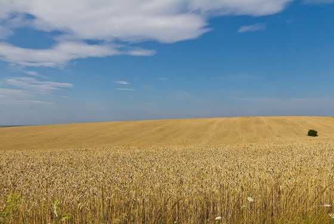
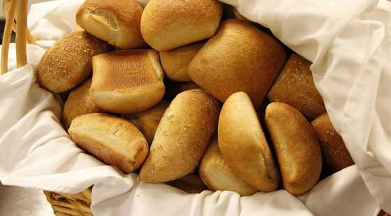
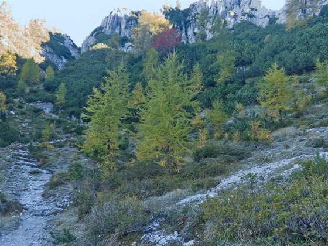

ABOUT
対馬小麦との出会いから
mountain mountainは、対馬で採れる小麦との出会いがきっかけで始まった天然酵母のパン屋です。その風味の豊かさに驚いた店主の米田凡実さんは、国産小麦とのブレンド率を追究し、柔らかな甘みの天然酵母を使い、発酵は低温でじっくり行っているそうです。
冷凍ものや添加物は使わず、ジャムの仕込みやサバのさばきまで、できるだけ自分の手で。発酵がうまくいったかは焼き上がるまで分からないので「毎回ドキドキ」だといいます。
以上は対馬全カタログ(2022年7月)の紹介記事で確認できた内容です。

- 2017年秋廃校になった内山分校の給食調理室で開店。カフェも併設し、月に3、4回のペースで営業。
- 2020年7月内山での営業を終了。
- 2021年10月佐須奈に「mountain mountain west」(対馬の西側にあることから)をオープン。
- 現在Instagramでは「mountain mountain + mountain mountain west」と表記。厳原町日吉のお店は2022年7月頃に開いたと紹介されています。
「mountain mountain」という店名の由来は確認できませんでした。山の形をした山型食パン(通称「山食」)が定番にあることから、制作側のイメージで「山」を飾りに使っています。


BREAD
その日に会える、パンたち
毎回同じものが並ぶわけではなく、手に入った食材を生かしてレシピを考えるスタイル。焼き菓子も含めると60〜70種類が棚に並んだことがあるそうです。


ある日のラインナップの例(2022年の紹介記事より)
今日の品ぞろえ・価格: 準備中(開店日・時間・パンの種類はInstagramで告知されています)






VOICE
口コミ
イメージ例
開店日を見て出かけたら、山食がまだ残っていました。小麦の甘みがしっかり。
イメージ例
天然酵母のパンは噛むほどに味が出ます。毎回違うパンに会えるのが楽しみ。
イメージ例
ドーナツがやさしい甘さ。島の小麦を使っていると知って、なおおいしく感じました。
上の3件は制作側が作ったイメージ例で、実在のお客様の声ではありません。
ACCESS
アクセス
| 住所 | 〒817-0012 長崎県対馬市厳原町日吉292-6 |
|---|---|
| 電話 | 準備中 |
| 営業時間 | 準備中(不定期。Instagramで告知) |
| 定休日 | 準備中 |
| @tsushimamountainmountain |